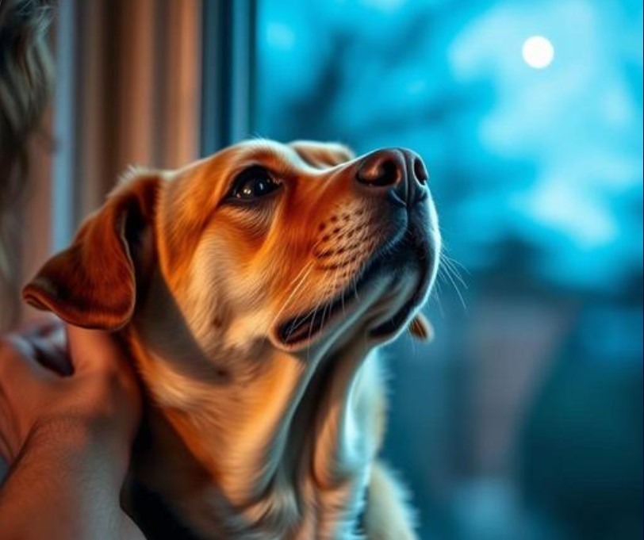

Every shelter has a particular category of animal that gets overlooked again and again: the senior dog whose best photo-op years are behind her, the cat with a medical condition that scares off casual adopters, the animal who's simply been there so long that the staff has stopped expecting anyone to ask about him at all.

The people who do adopt these specific animals — not the easy, obviously adoptable ones, but the overlooked ones — tend to describe the experience in a noticeably different way than typical pet adoption stories.
Why This Specific Kind of Adoption Hits Differently
Animal behaviorists and shelter researchers who study adopter experience have found that people who adopt harder-to-place animals (seniors, special-needs, long-term shelter residents) frequently report an unusually strong bond, often citing a clear awareness that they made a deliberate choice for an animal that most people wouldn't — a choice that carries a different emotional weight than picking the obviously charming puppy everyone wanted anyway.
What These Adopters Actually Say
Ask someone who adopted an older or special-needs shelter animal why they made that choice, and a common thread emerges: less "I wanted a pet" and more "I wanted to be the person who finally said yes to this one." There's a specific kind of meaning in choosing the animal the system had essentially given up on, one that adopters of conventionally "easy" pets don't always describe in quite the same way.
The Genuinely Underappreciated Math of It
Senior and special-needs shelter animals are statistically far less likely to be adopted, and far more likely to spend their remaining time in a shelter rather than a home, according to data tracked by numerous animal welfare organizations. Every adopter who chooses one of these animals is making a measurable difference in a system that's structurally stacked against that specific animal ever finding a home at all.
Marking the Decision to Say Yes Anyway
Some adopters have started marking this specific kind of adoption with a star on GalaxySpace — the animal's name, the adoption date, and the actual reason behind choosing the one nobody else wanted, recorded permanently as a small tribute to a decision that mattered more than a typical pet adoption story usually conveys.
You can create one here — a small, lasting acknowledgment of choosing the animal the world had nearly stopped looking for.